3.1 矩阵及其线性运算
认识矩阵、特殊矩阵及矩阵的线性运算。
进度0%
掌握 0 / 6§3.1.1
矩阵的定义
矩阵(一) / 矩阵及其线性运算
定义 3.1.1 矩阵
一个\(m\times n\)矩阵为由 \(m\times n\)个数排成的\(m\)行\(n\)列的阵列
\[\left(
\begin{array}{cccc}
a_{11} & a_{12} & \cdots & a_{1 n}\\
a_{21} & a_{22} & \cdots & a_{2 n}\\
\vdots & \vdots & \ddots & \vdots\\
a_{m 1} & a_{m 2} & \cdots & a_{mn}\\
\end{array}
\right)_.\]
记作\(A=(a_{ij})_{m\times n}\). 称 \(a_{ij}\)为矩阵\(A\)的第\((i,j)\)元素; 当\(i=j\)时,\(a_{ii}\)也称为\(A\)的对角元.
若两个矩阵\(A\)和\(B\)的行数和列数相同且对应位置的元素都相同,则称\(A\)与\(B\) 相等,记为\(A=B\). 否则称\(A\)与\(B\) 不相等,记为 \(A\neq B\)． 例如:
\[
\begin{pmatrix}1&1&1\\1&1&1\end{pmatrix}\neq\begin{pmatrix}1&1\\1&1\end{pmatrix},\quad
\begin{pmatrix}1&2\\0&3\end{pmatrix}\neq\begin{pmatrix}1&0\\0&3\end{pmatrix}.
\]
这页感觉如何？
§3.1.2
特殊矩阵命名
矩阵(一) / 矩阵及其线性运算
按照矩阵行列数大小,非零元分布或元素取值范围等,我们有如下特殊矩阵命名:
-
\(n\)维行向量 := \(1\times n\) 矩阵;
-
\(n\)维列向量 := \(n\times 1\) 矩阵;
-
零矩阵 \(O\), 或 \(0\);
-
\(n\)阶方阵;
-
单位阵 \(I\);
-
数量矩阵 \(aI\);
-
对角矩阵 \(\mathrm{diag}(a_1,\cdots,a_n)\);
-
上(下)三角矩阵;
-
(反)对称矩阵;
-
整数矩阵;有理数矩阵;实矩阵;复矩阵;
-
数域\({\mathbb F}\)上的矩阵;
-
多项式矩阵.
这页感觉如何？
§3.1.3
矩阵的例子
矩阵(一) / 矩阵及其线性运算
例题 3.1.1
\(\bullet\) \(\begin{pmatrix}0&1\\1&0\\\end{pmatrix}\)为整系数对称\(2\)阶方阵.
\(\bullet\) \(\begin{pmatrix}0&\sqrt{-1}&-1\\-\sqrt{-1}&0&\pi\\1&-\pi&0\\\end{pmatrix}\)为复系数反对称\(3\)阶方阵.
\(\bullet\) \(\begin{pmatrix}e^{\frac{i\pi}{3}}&0\\0&e^{\frac{i\pi}{3}}\\\end{pmatrix}\)为复系数2阶数量矩阵.
\(\bullet\) \(\begin{pmatrix}0&\sqrt{-1}&-1\\-\sqrt{-1}&0&\pi\\1&-\pi&0\\\end{pmatrix}\)为复系数反对称\(3\)阶方阵.
\(\bullet\) \(\begin{pmatrix}e^{\frac{i\pi}{3}}&0\\0&e^{\frac{i\pi}{3}}\\\end{pmatrix}\)为复系数2阶数量矩阵.
这页感觉如何？
§3.1.4
应用中的一些例子
矩阵(一) / 矩阵及其线性运算
-
图的邻接矩阵（更一般地，可加入箭向和长度）:

TikZ 图形 -
数字图像 \(3\)个\(m\times n\)取值在\(0,1,\cdots,255\)的矩阵.
DeepSeek-V4-Flash-0731 中的词嵌入矩阵
\[E\in \mathbb R^{129280\times 4096}.\]
\[
\begin{array}{cc}
0 & \\
\vdots & \vdots \\
320 & \text{。} \\
\vdots & \vdots \\
23775 & \text{线性} \\
\vdots &\vdots \\
60147 & \text{我爱} \\
\vdots & \vdots \\
70889 & \text{代数} \\
\vdots & \vdots \\
129279 & \\
\end{array}
\underbrace{\left(\begin{array}{rrrrrr}
\cdots & \cdots & \cdots & \cdots & \cdots \\
\cdots & \cdots & \cdots & \ddots & \cdots \\
0.0074 & -0.0134 & 0.0194 & \cdots & -0.0045 \\
\cdots & \cdots & \cdots & \ddots & \cdots \\
0.0410 & 0.0045 & -0.1797 & \cdots & -0.0017\\
\cdots & \cdots & \cdots & \ddots & \cdots \\
0.1699 & -0.0593 & 0.2314 & \cdots & 0.0219\\
\cdots & \cdots & \cdots & \ddots & \cdots \\
0.0938 & -0.0265 & -0.1035 & \cdots & 0.1289\\
\cdots & \cdots & \cdots & \ddots & \cdots \\
\cdots & \cdots & \cdots & \cdots & \cdots \\
\end{array}\right)}_{4096}
\]
保存精度采用 BF16(保存一个实数需要：符号1位+指数8位+尾数7位=16bit=2byte), 共需要
\(\frac{129280 \times 4096 \times 2}{10^9} \approx 1.06\ \mathrm{GB}\).
这页感觉如何？
§3.1.5
矩阵的线性运算
矩阵(一) / 矩阵及其线性运算
定义 3.1.2 加法与数乘
设\(\lambda\)为数域\({\mathbb F}\)中的数. 取两个\({\mathbb F}\)系数的\(m\times n\)矩阵 \(A=(a_{ij})_{m\times n}\in {\mathbb F}^{m\times n}\), \(B=(b_{ij})_{m\times n}\in {\mathbb F}^{m\times n}\). 定义
-
-
加法\[{\textcolor[rgb]{0,0,1}{A + B}} :=(a_{ij}+b_{ij})_{m\times n}:=\begin{pmatrix} a_{11}+b_{11} & a_{12}+b_{12} & \cdots & a_{1 n}+b_{1n}\\ a_{21}+b_{21} & a_{22}+b_{22} & \cdots & a_{2 n}+b_{2n}\\ \vdots & \vdots & \ddots & \vdots\\ a_{m 1}+b_{m1} & a_{m 2}+b_{m2} & \cdots & a_{mn}+b_{mn} \end{pmatrix}_,\]
-
数乘\[{\textcolor[rgb]{0,0,1}{\lambda A}} :=(\lambda a_{ij})_{m\times n}:=\begin{pmatrix} \lambda a_{11} & \lambda a_{12} & \cdots & \lambda a_{1 n}\\ \lambda a_{21} & \lambda a_{22} & \cdots & \lambda a_{2 n}\\ \vdots & \vdots & \ddots & \vdots\\ \lambda a_{m 1} & \lambda a_{m 2} & \cdots & \lambda a_{mn} \end{pmatrix}_.\]
类似地定义负矩阵和矩阵的减法运算:
\[{\textcolor[rgb]{0,0,1}{-A}}:=(-a_{ij})_{m\times n}, \quad {\textcolor[rgb]{0,0,1}{A-B}}:=A+(-B) = (a_{ij}-b_{ij})_{m\times n}.\]
注: 只有行数和列数相同的矩阵才可以相加减. 否则无意义.
例题 3.1.2
-
\(A = \left(\begin{array}{ccc} 1 & 3 & 5\\ - 1 & 2 & 4 \end{array}\right)\), \(B = \left(\begin{array}{ccc} 2 & - 1 & 3\\ 7 & 3 & 1 \end{array}\right)\)，求\(A+B\)和\(A-B\).
-
\(A = \left(\begin{array}{ccc} 1 & 3 & 5\\ - 1 & 2 & 4 \end{array}\right)\), 求\(2A\).
-
设\(A=\begin{pmatrix}1&2\\3&4\end{pmatrix}\), \(B=\begin{pmatrix}3&5\\7&6\end{pmatrix}\), \(C=\begin{pmatrix}0&-1\\9&3\end{pmatrix}\).
-
求 \(3A+2B-4C\).
-
若\(5A+3X =B\). 求\(X\).
-
类似于向量的线性运算,矩阵的线性运算也满足如下八条基本性质:
定理 3.1.1
-
加法交换律: \(A+B=B+A\);
-
加法结合律: \(A+(B+C)=(A+B)+C\);
-
有零矩阵: \(A+0=A=0+A\);
-
有负矩阵: \(A+(-A)=0=(-A)+A\);
-
数乘单位元: \(1A = A\);
-
数乘结合律: \(\lambda(\mu A)=(\lambda \mu)A\);
-
左分配律: \((\lambda+\mu)A=\lambda A + \mu A\);
-
右分配律: \(\lambda (A+B) =\lambda A + \lambda B\);
其中 \(A,B,C\) 为使得运算有有意义的矩阵, \(\lambda,\mu\)为数.
这页感觉如何？
§3.1.6
基本矩阵
矩阵(一) / 矩阵及其线性运算
\[
\begin{array}{lcc}
E_{ij}:=& \left(\begin{array}{ccc}0&\cdots&0\\\vdots&1&\vdots\\0&\cdots&0\\\end{array}\right)
& \leftarrow\text{\small 第$i$行} \\
&{\uparrow \atop \text{第$j$列}} & \\
\end{array}
\]
引理 3.1.1
任意 \(m\times n\)矩阵\(A=(a_{ij})_{m\times n}\)都可以唯一的表示为基本矩阵的线性组合
\[A=\sum_{i=1}^m\sum_{j=1}^n a_{ij}E_{ij}.\]
这页感觉如何？